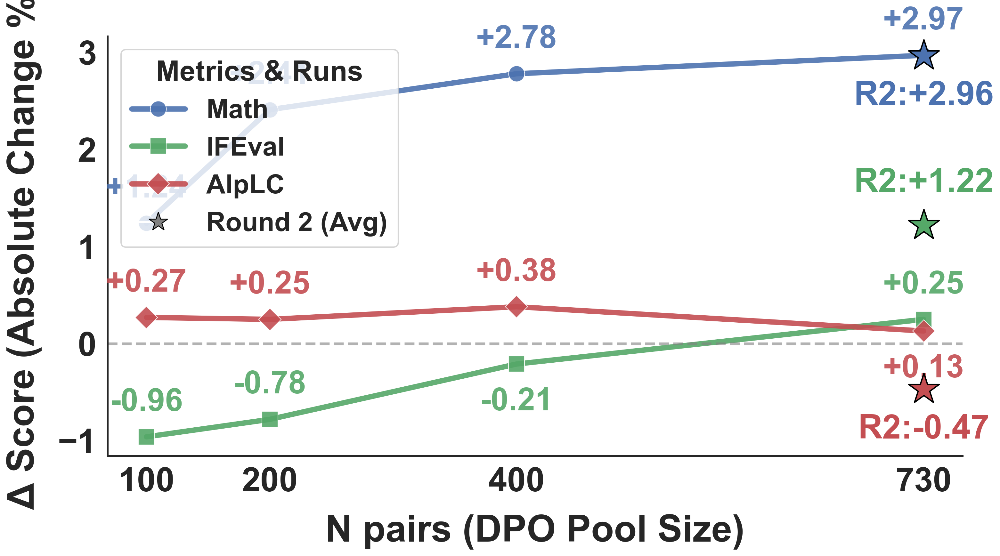
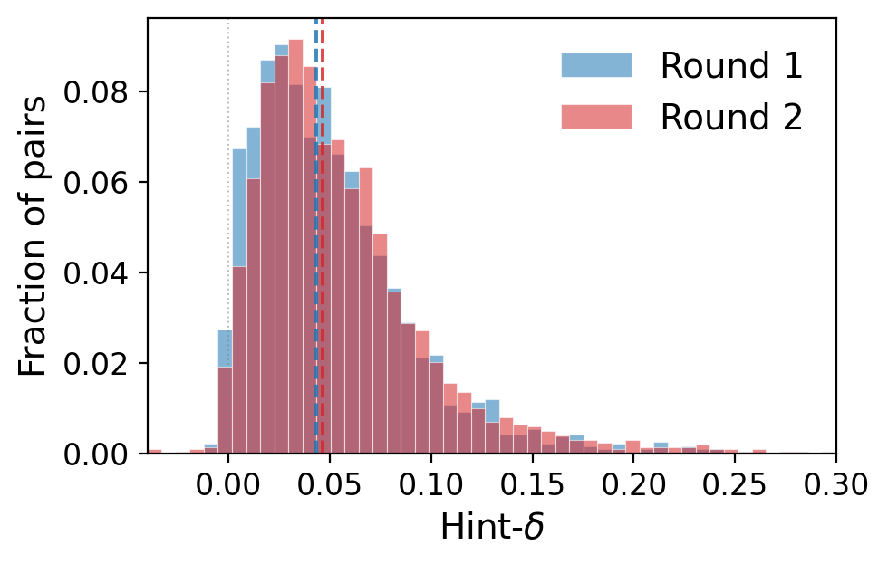

这条 X 帖到底在说什么
原帖主张：开放式任务中没有多数投票、程序 verifier 或 LLM judge，因此他们构建了一个不依赖这些外部信号的 self-improvement 方法：G-Zero。
线程中的核心链接分别指向 arXiv 论文、Hugging Face Papers 页面和 GitHub 代码仓库。
作者用一个很现实的面试问题切入：像“写一封离职邮件”“给软件工程师解释 Kalman filter”这类任务，没有唯一正确答案，也没有可执行测试。 传统 RLVR 可以在数学/代码中用最终答案或单元测试打分，但开放式写作、解释、建议、对话更多依赖结构、风格、受众适配和细节组织。
G-Zero 的回应不是训练一个更强 judge，也不是让多个答案投票，而是让同一个 Solver 在两个上下文里看自己的无提示答案：
只给问题 \(q\) 时，它生成一个 a_hard；给问题和 hint \(h\) 时，再看它对同一个 a_hard 的 token log-prob 是否下降。
如果 hint 让原来的答案变得“不像自己在有 hint 时会写的答案”，就说明 hint 改变了模型的条件分布。
帖中最重要的判断
High δ 被作者解释为 answer leakage：hint 过度暴露答案，DPO 学到的是“从 hint 抄内容”，无 hint 测试时泛化差。
Low δ 被解释为 style / structure shift：hint 改变组织方式、推理结构或表达策略，而不是直接提供答案；这类改进更可能迁移到无 hint 推理。
推文结果摘要
作者在帖中报告 Qwen3-8B-Base 与 Llama-3.1-8B-Instruct 上：AIME 平均提升约 +2.97 pp，IFEval 提升约 +1.22 pp，AlpacaEval LC 大体稳定；R1 捕获主要收益，R2 展示 Proposer 与 Solver 的共演右移。
这些数字需要回到论文表格看：不同模型、不同指标并非全部单调提升。
方法不是“自己奖励自己”，而是“用 hint 造成的分布差做训练信号”

Proposer / Challenger 生成开放式任务和 hint
Proposer 收到一个元提示，输出 <question> 和 <hint>。
任务分布被明确引导到写作、解释、建议、分析、代码、角色扮演、伦理/科学/日常问题等开放式任务；
数学/逻辑题允许出现，但提示中要求大约不超过六分之一。
Solver 在无 hint 下先生成 a_hard
这一步不是为了找“错答案”，而是获取当前模型在问题 \(q\) 上自然会写出的 baseline response。
后续的 δ 不是比较两个最终答案的语义质量，而是比较同一个 a_hard 在两个上下文下的平均 token log-prob。
计算 Hint-δ：hint 是否显著改变模型分布
如果有 hint 时，模型对原始无 hint 答案的概率下降，说明 hint 让模型倾向于另一种回答轨迹。 δ 越大，偏移越强；但偏移强不等于训练价值高，因为强偏移可能来自答案泄漏。
用 δ 奖励 Proposer，但用 lower-half δ 筛选 DPO 数据
这是 G-Zero 最容易误解的一点：Proposer 训练时希望生成能让 Solver 明显受影响的 hint，因此 reward 含 δ； 但 Generator 的 DPO 数据会保留每轮 δ 分布的下半部分，而不是最高 δ 样本。 作者认为 lower-half 更像结构性引导，upper-half 更容易泄漏答案或带来 off-manifold drift。
DPO 训练 Solver，但 prompt 只保留问题 \(q\)
Phase 2 采样 a_assisted ~ π(·|q,h) 和 a_hard ~ π(·|q)。
Phase 3 训练时把 a_assisted 作为 chosen，把 a_hard 作为 rejected，但 DPO prompt 是 q 本身，不包含 hint。
目标是把 hint 带来的结构/表达策略蒸馏到无 hint 条件分布中。
δ 具体怎么算，为什么它不是质量分数
Hint-δ 的输入是三样东西：问题 \(q\)、hint \(h\)、以及 Solver 在无 hint 下已经生成的答案 \(a_{\text{hard}}\)。 它输出一个标量，表示“在有 hint 的上下文中，原本那条无 hint 答案变得多不自然”。
一个直觉例子
如果问题是“给非营利组织写一封募资邮件”，无 hint 答案可能是通用模板；hint 要求“用故事/统计开头，把资助说成战略投资，给出可衡量结果”。
在有 hint 的上下文中，通用模板 a_hard 的 token 概率会下降，因为模型更倾向于写结构更明确的版本。这时 δ 为正。
为什么它不是 reward model
δ 没有直接判断 a_assisted 是否真实更好，也不检查事实性、安全性或用户偏好。它只说：hint 是否让 Generator 的条件分布发生变化。
所以 δ 更像“自诊断扰动强度”，不是外部意义上的质量、真理或 helpfulness 分数。
训练数据如何从零生成到 DPO 对
| 阶段 | 输入 | 模型动作 | 输出 | 关键约束 |
|---|---|---|---|---|
| Phase 1 Proposer GRPO | 固定元提示 | 生成 \(q,h\)，用当前 Generator 的 δ 做 reward | 更会找盲点的 Proposer | 6 steps、batch 128、group size 16；hint 超过 200 chars 有长度惩罚；BLEU cluster 惩罚防重复 |
| Phase 2 DPO pool | 每轮约 2,000 个 \(q,h\) | Solver 采样 a_hard 与 a_assisted，重新计算 δ |
raw_pool.jsonl 和筛选后的 dpo_data.jsonl |
默认保留 δ percentile [0,50]，再过滤过短/过长/重复/echo/role marker/长度膨胀样本 |
| Phase 3 Solver DPO | prompt=q, chosen=a_assisted, rejected=a_hard |
length-normalized DPO，reference 为本轮 DPO 开始前的 Solver snapshot | 无 hint 条件下更接近 assisted 风格的 Generator | DPO β=2.0，LR=1e-5，max steps=50，LoRA rank=32 |
phase3.py 对 chosen/rejected log-ratio 都做 token mask 平均，目的是降低 DPO 对长 chosen 的偏好。prompts.py 明确不给 Solver 加 system prompt，因为 README/代码注释说 Qwen3-8B-Base 会在部分 rollout 中 echo system message，污染 chosen/rejected 文本并伤害 IFEval。
这说明作者确实在处理 DPO 数据污染，而不是只提出一个高层概念。
评估到底测的是什么
AIME24 / AIME25
测什么：竞赛数学推理。模型需要给出最终答案。
指标：mean@32，即每题 temperature 0.7 独立采样 32 次，统计平均正确率。AIME 每年只有 30 道题，因此百分比波动很大。
IFEval
测什么：严格遵循格式、关键词、数量、语言等可规则验证的用户指令。
指标：prompt-level / instruction-level 的 strict 与 loose accuracy。strict 更看精确遵循，loose 放宽部分格式约束。
AlpacaEval 2.0 LC
测什么：一般聊天/开放式助手回答的 pairwise 偏好。
指标：length-controlled win rate，对回答长度做控制以减少“更长更好”的偏差。论文使用 Qwen3-235B-A22B-Instruct-2507 作为 judge。
结果有意思，但不是“全面显著碾压”
| 模型 | 配置 | AlpLC | IFEval pS/pL/iS/iL | AIME24 | AIME25 | 平均 |
|---|---|---|---|---|---|---|
| Qwen3-8B-Base | Base | 8.94 | 43.07 / 50.28 / 56.00 / 61.75 | 10.42 | 7.19 | 33.95 |
| Qwen3-8B-Base | G-Zero R2 | 8.47 | 43.81 / 50.83 / 57.92 / 63.43 | 11.15 | 12.40 | 35.43 |
| Llama-3.1-8B-Instruct | Base | 24.12 | 58.41 / 65.80 / 69.42 / 75.30 | 5.94 | 0.42 | 42.77 |
| Llama-3.1-8B-Instruct | G-Zero R2 | 27.86 | 59.52 / 66.35 / 70.38 / 75.78 | 6.77 | 0.63 | 43.90 |
Qwen3-8B-Base 的主收益在 AIME25 和 IFEval strict instruction 上，但 AlpacaEval LC 从 8.94 降到 8.47。 Llama-3.1-8B-Instruct 的主收益在 AlpacaEval LC，从 24.12 到 27.86；数学提升较小。 这支持“不同 base 模型暴露不同 bottleneck”的说法，但不支持“所有能力均大幅提升”的强说法。


δ filter 消融：lower-half 是“均衡选择”，不是绝对最优
| δ percentile filter | Chat | IFEval | Math | Average | 解释 |
|---|---|---|---|---|---|
| Base | 8.94 | 52.78 | 8.81 | 33.95 | 未训练 |
| [0,50] G-Zero | 9.07 | 53.03 | 11.78 | 34.96 | 默认 bot50，平均最高 |
| [20,80] | 9.07 | 51.82 | 12.54 | 34.40 | Math 更高，但 IFEval 明显较低 |
| [50,100] | 9.68 | 51.97 | 10.37 | 34.04 | 更像吸收 hint 内容，chat 提升但指令/数学折损 |
| [0,100] | 9.10 | 53.08 | 10.58 | 34.65 | 不过滤也有效，但 Math 不如 bot50 |
这个表是我觉得最诚实的一块：作者没有把 [0,50] 说成对所有指标支配。 它是一个更均衡的默认点，而不是理论上唯一正确的 filter。
论文自己承认的限制，以及我额外看到的风险
1. 单次运行，误差条不足
论文明确说 Table 1 每个 cell 是一次 end-to-end run，因为总 Tinker compute 约 2,000 美元；三 seed 会大约三倍成本。
AIME24/25 只有 30 道题，论文指出在 \(p\approx0.3\) 附近 1σ 约 8 个百分点。因此 AIME 上几个百分点的提升，不能轻易当作统计稳健结论。
2. R3 collapse 说明共演并不天然稳定
论文附录报告 Llama-3.1-8B-Instruct 的探索性 R3 collapse：Phase 2 filter 拒绝了全部 1,994 个 candidate pairs，因为 R2 Generator 收敛到过短回答，不满足 chosen_min_chars。
作者也承认 Proposer 可能继续最大化 δ，但生成越来越 idiosyncratic 的 hint，不再对应真正有信息的指导。
3. δ 只测分布变化，不测事实真伪
如果 hint 把模型带向更自信但错误的写法，δ 仍可能为正。G-Zero 需要质量过滤和最终安全/事实评估来兜底。
4. “zero data” 不是“零先验”
Proposer 的元提示、人为设计的任务类别、长度惩罚、BLEU 惩罚、DPO filter、评估集和 judge 都是人工注入的结构。它不使用人工标注样本训练，但不是无设计偏置。
我的判断：这是一个好信号设计，不是完整自我改进闭环
G-Zero 最值得学习的地方，不是“让模型自己训练自己”这个口号，而是它把开放式任务中的一个弱监督现象拆成了两个不同用途： 高 δ 用来驱动 Proposer 找盲点，低 δ 用来构造更适合 DPO 的细粒度 preference pair。
我认为这篇工作的强点是：训练信号非常便宜、与当前模型能力自适应、能避开 judge 能力上限和 judge reward hacking 的一部分问题； 代码也把关键工程问题做了出来，包括 per-token δ、长度惩罚、BLEU 去重、chosen/rejected 长度比过滤、zlib repetition filter、length-normalized DPO。
但它的弱点同样清楚：δ 不是价值函数，不能保证 truthfulness；R3 collapse 暴露了递归训练里的长度和 idiosyncratic hint hacking； 主结果还缺少 multi-seed 和更强模型/更大任务分布验证。 因此我会把它定位为“开放式自我改进的一种很有启发的 intrinsic signal”，而不是已经解决了 open-ended self-improvement。
如果要继续做，我会优先看三件事
| 问题 | 为什么重要 | 建议实验 |
|---|---|---|
| δ 与人类偏好/事实正确性的相关性 | δ 只测分布位移，必须知道它何时对应真实质量提升。 | 抽样 lower/mid/high δ pairs，用独立人评或强 judge 标注质量、事实性、helpfulness，并画 calibration curve。 |
| R3 以后如何稳定 | 如果只能两轮，continuous self-evolution 的 claim 会弱很多。 | 加入长度下界自适应、KL/entropy 监控、anti-shortness reward、Proposer novelty 与 usefulness 双目标。 |
| 不同任务族是否出现不同 filter 最优区间 | Table 3 已显示 [20,80] 对 Math 更好，单一 bot50 可能不是通用选择。 | 按 writing/explain/advice/code/math 分桶做 percentile filter sweep，学习 task-conditional δ filter。 |
证据边界与资料索引
X 线程
原帖、3 条作者补充和评论区回复来自上述 X 线程。作者在帖中提出问题：开放式任务没有 majority vote、verifier 或 LLM judge 时，模型如何自我改进？
根帖时间：Tue May 12 18:40:32 +0000 2026。
论文与 HF 页面
arXiv 编号 2605.09959，题名为 G-Zero: Self-Play for Open-Ended Generation from Zero Data，arXiv v1 提交时间为 2026-05-11。
Hugging Face Papers 页面同样指向该论文，并显示由 Chengsong Huang 于 2026-05-12 提交到 HF。
代码仓库
GitHub 仓库为 Chengsong-Huang/G-Zero。README 及 hint_delta.py、phase2.py、phase3.py、config.py、prompts.py 中包含与公式、数据过滤和 DPO 训练直接相关的实现。
本报告不使用 star/fork 统计作为事实依据，评估基于论文和代码实现本身。